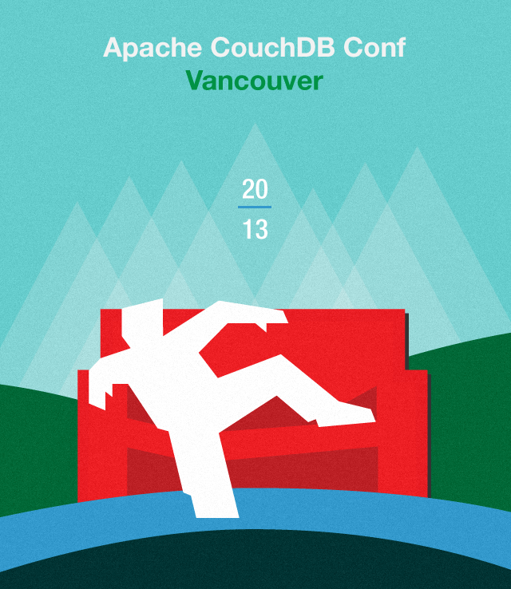
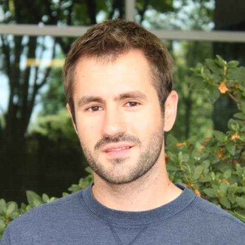
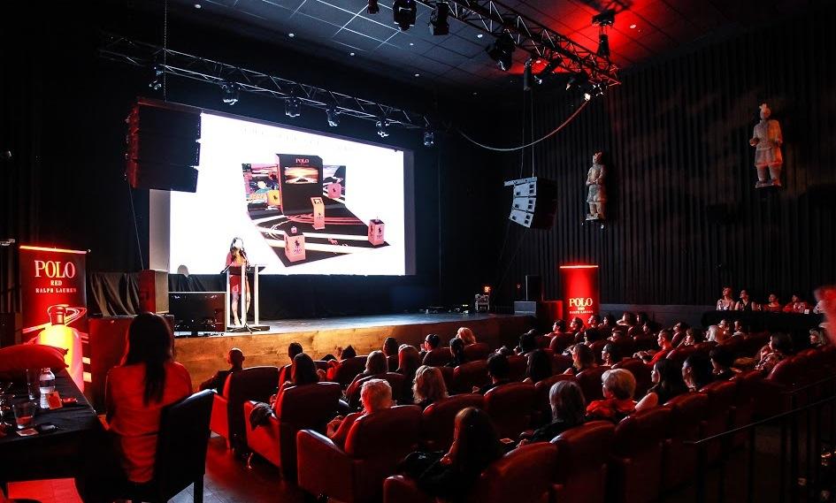

Apache CouchDB Conf Vancouver
November 13, 2013
The CouchDB Conf brings together the passionate individuals who have contributed to the development of the database and community. CouchDB Conf is where 200+ developers and technology evangelists, will gather to learn about CouchDB and related technologies, covering everything from getting started to advanced features and internals, app development, and best practices.
As an additional incentive to attend, Apache CouchDB Conf is happening the day before CascadiaJS (November 14-15, 2013) at the same venue. Because of the overlap between the JavaScript and CouchDB communities, the back-to-back conferences provide a single destination for developers of data-driven web apps. CouchDB Conf is also one of the many events taking place as part of Vancouver Developer Week.
Register
CouchDB Conf is a one day event. Tickets are on sale now! Standard ticket prices are $150 and includes access to the full day’s event and reception with CascadiaJS.
Agenda
At Apache CouchDB Conf Vancouver, participants will learn about CouchDB and related technologies, covering everything from getting started to advanced features and internals, app development, and best practices. Attendees will also get updates on other projects in the community, including PouchDB.
| November 13, 2013 | Program |
|---|---|
| 8:30-9:30am | Breakfast & Registration |
| 9:30-10:00 | Welcome & Opening Remarks |
| 10:00-11:00 | Keynote |
| 11:00-12:00pm | Sessions |
| 12:00-1:00 | Lunch |
| 1:00-1:30 | Sessions |
| 2:30-3:00 | Break |
| 3:00-4:30 | Sessions |
| 4:30-5:00 | Closing Remarks |
| 5:00-7:00 | Reception with CascadiaJS |
Speakers
-

Jan Lehnardt
HoodieDissatisfied with the status-quo.
@CouchDB • @jsconfeu • @hoodiehq
Duct tape artist. -

Dale Harvey
MozillaMozillian working on @Boot2Gecko, Author of @pouchdb, generally obsessed with web + open source geekery.
-
Jason Smith
NodejitsuNodejitsu CTO; Apache CouchDB committer
-

Will Perry
MicrosoftWill works at Microsoft on the Windows Azure Service Bus and is also GLEAM Co-Chair. Often found at the Pro Club in Bellevue or on Capitol Hill.
-
Jason Johnson
SoftLayerPython and Java hacker. R&D Software Engineer @softlayer
More speakers will be announced soon!
Organizers
-
Sara Strope
CloudantProduces events @Cloudant. Avid triathlete and entrepreneur @shareiceapp
-
Yuriy Dybskiy
CloudantMath grad / Front-end engineer / Cyclist / Tango Dancer
Developer Advocate @Cloudant
Sponsors
CouchDB Conf is a great opportunity to receive targeted exposure to a group of developers, technology leaders, and decision makers active in the open source database community.
Whether your goal is to support the community, develop partnerships, or make contacts, CouchDB Conf is the perfect platform. Sponsorship of CouchDB Conf offers a unique opportunity to both support and reach a dedicated group of highly engaged, influential developers in a volunteer-run community.
Venue
The CouchDB Conf will be held at The Imperial, a multi-purpose venue in Vancouver, Canada. The Imperial was originally a Chinese language house and was known for kung-fu movies. After a multi-million renovation in 2007, The Imperial opened as a multi-purpose venue and state of the art theater. It will serve as the venue for both CouchDB Conf and CascadiaJS.
Address:
The Imperial319 Main Street
Vancouver, BC
V6A 2S9
Accommodations:
We will be announcing room blocks shortly. Here are some recommendations of our favorite places in Vancouver: The Burrard1100 Burrard St.
Vancouver, BC V6Z 1Y7 T 604 681 2331 info@TheBurrard.com
Transportation:
We highly recommend using public transportation to get around Vancouver! Depending on where you stay, you will be able to use SkyTrain or busses. The Imperial is located near Chinatown and Gastown.Previous Event
CouchDB Conf Berlin January 2013